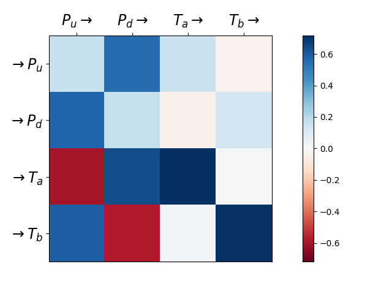

This example fit hawkes kernels on finance data provided by tick-datasets. repository.
Kernels norms of a Hawkes process fit on finance data of Bund market place. This reproduces experiments run in
Bacry, E., Jaisson, T. and Muzy, J.F., 2016. Estimation of slowly decreasing Hawkes kernels: application to high-frequency order book dynamics. Quantitative Finance, 16(8), pp.1179-1201.
with \(P_u\) (resp. \(P_d\)) counts the number of upward (resp. downward) mid-price moves and \(T_A\) (resp. \(T_b\)) counts the number of market orders at the ask (resp. bid) that do not move the price. We observe expected behavior with for example mid-price moving downward triggering (resp. preventing) market orders at the ask (resp. at the bid).
Python source code: plot_hawkes_finance_data.py
import numpy as np
from tick.dataset import fetch_hawkes_bund_data
from tick.inference import HawkesConditionalLaw
from tick.plot import plot_hawkes_kernel_norms
timestamps_list = fetch_hawkes_bund_data()
kernel_discretization = np.hstack((0, np.logspace(-5, 0, 50)))
hawkes_learner = HawkesConditionalLaw(
claw_method="log", delta_lag=0.1, min_lag=5e-4, max_lag=500,
quad_method="log", n_quad=10, min_support=1e-4, max_support=1,
n_threads=4)
hawkes_learner.fit(timestamps_list)
plot_hawkes_kernel_norms(hawkes_learner,
node_names=["P_u", "P_d", "T_a", "T_b"])
Total running time of the example: 5.58 seconds ( 0 minutes 5.58 seconds)